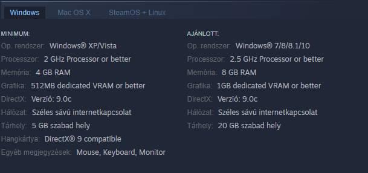

Garry’s Mod
A Garry’s Mod (vagy GMOD) egy sandbox (homokozó) játék, melyben ökörködéstől kezdve animálásig bármit csinálhatunk. Én építgetni szoktam benne időnként. A játékot Garry Newman alkotta meg a Valve Source motorjára alapozva. 2004-ben jelent meg. 2006-tól a Valve a kiadója, és a Facepunch Studios a fejlesztője. A játék kb. 16 éves, és 2019 Decemberéig 15 millió példányt adtak el belőle. A játék Steamen vásárolható meg 9,99€-ért, viszont a téli- és nyári leárazásoknál akár 3 vagy 4 euróért is megvehető.
GÉPIGÉNY (FORRÁS: STEAM)
